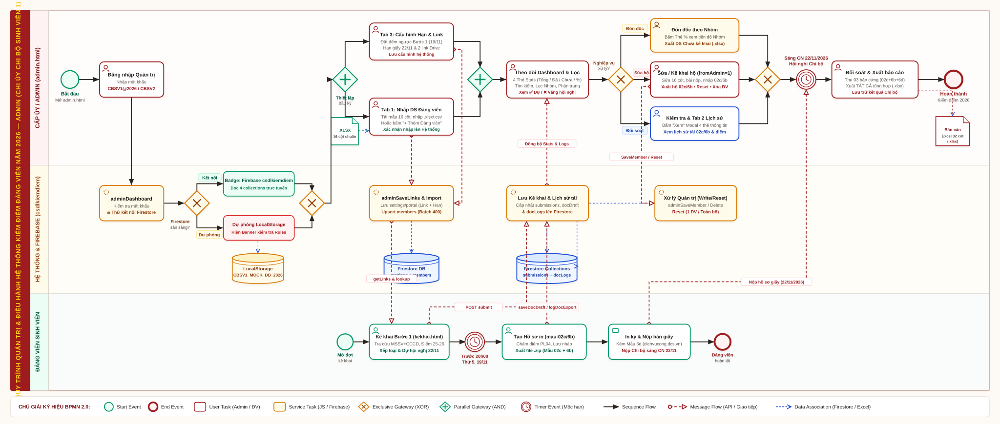

Hướng Dẫn Sử Dụng Cổng Quản Trị (Admin)
& Quy Trình Nghiệp Vụ BPMN 2.0 Năm 2026
Tài liệu chuẩn hóa quy trình vận hành Hệ thống Kiểm điểm, Đánh giá và Xếp loại Đảng viên năm 2026 trên nền tảng Firebase Cloud Firestore (csdlkiemdiem) kết hợp dự phòng localStorage.

Cuộn chuột hoặc nhấp đúp để phóng to/thu nhỏ; kéo để di chuyển trên sơ đồ; hoặc bấm nút mở rộng góc phải để xem toàn màn hình. Sơ đồ gồm 3 Swimlanes: Cấp ủy / Admin (admin.html) — Hệ thống & Firebase (csdlkiemdiem) — Đảng viên Sinh viên.


Đăng nhập, Trạng thái đồng bộ Cloud Firestore & 4 Thẻ Thống kê
1 Đăng nhập Cổng Quản trị & Phiên làm việc
- Truy cập
admin.html(hoặc bấm liên kết Cổng quản trị ở chân trang chủindex.html). - Nhập mật khẩu quản trị (mặc định hệ thống chấp nhận
CBSV1@2026hoặcCBSV2@2026, không phân biệt hoa thường) rồi bấm "Đăng nhập". - Sau khi đăng nhập thành công, mật khẩu được lưu tạm trong
sessionStorage(khóaCBSV1_ADMIN_PASS) để tự động đăng nhập lại khi tải lại trang. Khi dùng máy tính dùng chung, nhớ bấm nút "Đăng xuất" ở góc trên bên phải.
2 Nhận biết trạng thái Cơ sở dữ liệu (Firebase vs LocalStorage)
- Firebase: csdlkiemdiem (Trạng thái chuẩn): Hệ thống đang đồng bộ trực tuyến với Cloud Firestore (4 collections:
settings,members,submissions,docLogs) theo cấu hình trongconfig.js(USE_FIREBASE: true). Mọi dữ liệu Đảng viên gửi lên đều hiển thị ngay tại đây. - Dự phòng cục bộ (LocalStorage): Hiện banner cảnh báo vàng khi mất kết nối mạng, chưa bật Firestore Database hoặc bị chặn Firestore Rules. Lúc này dữ liệu chỉ đọc/lưu trên bộ nhớ trình duyệt hiện tại (
CBSV1_MOCK_DB_2026). Cần kiểm tra lại Firebase Console (csdlkiemdiem) → Firestore Database → Rules rồi bấm "Làm mới".
3 Sử dụng 4 Thẻ Thống kê Tương tác (Click-to-Filter)
Bốn thẻ thống kê trên đầu Dashboard đều là các nút bấm lọc nhanh:
Bấm để chuyển về Tab 1 và hiển thị Tất cả Đảng viên trong danh sách.
Bấm để lọc ngay danh sách các đồng chí Đã gửi kê khai Bước 1.
Bấm để lọc danh sách các đồng chí Chưa kê khai nhằm theo dõi đôn đốc.
Bấm để mở Popup "Tổng hợp hoạt động & Tiến độ theo Nhóm" — xem chi tiết ai đã kê khai, ai đã tải 02c/6b, ai đã lưu nháp và bảng tỷ lệ từng Nhóm (bấm vào tên nhóm để lọc nhanh).
Quản lý danh sách Đảng viên, Sửa trực tiếp & Kê khai hộ
1 Tìm kiếm, Lọc theo Nhóm & Phân trang
- Tìm kiếm tức thì: Gõ vào ô "Tìm theo Họ tên, MSSV, Nhóm, Khoa..." để lọc đồng thời trên 5 trường (kể cả
Loại Đảng viên: Chính thức / Dự bị). - Bộ lọc Nhóm sinh hoạt & Trạng thái: Kết hợp chọn
Tất cả các nhóm/ từng nhóm cụ thể vớiTất cả trạng thái/Đã kê khai/Chưa kê khai. - Phân trang linh hoạt: Thanh phân trang cuối bảng cho phép chọn số dòng mỗi trang (
10,15,25,50,100hoặcTất cả). - Đọc nhanh trạng thái trên bảng:
- Cột Kê khai: Ngoài badge Đã kê khai + thời gian gửi, hệ thống hiển thị thêm xác nhận dự Hội nghị kiểm điểm
22/11/2026: ✅ Dự hội nghị hoặc ❌ Vắng hội nghị (rê chuột vào để xem lý do vắng). - Cột Hồ sơ in: Phân biệt 3 trạng thái: Đã tải (đã xuất tệp ZIP/DOCX), Đã lưu nháp (đã nhập liệu và bấm lưu nháp trên
mau-02c.html), Chưa tạo. - Cột Tự xếp loại: Tự động gắn nhãn
Chưa đủ 6 thángvới Đảng viên kết nạp sau22/05/2026.
- Cột Kê khai: Ngoài badge Đã kê khai + thời gian gửi, hệ thống hiển thị thêm xác nhận dự Hội nghị kiểm điểm
2 Thanh thao tác nhanh: Thêm, Nhập Excel, Xuất báo cáo & Reset
+ Thêm Đảng viên: Mở hộp thoại nhập mới từng đồng chí (yêu cầu tối thiểu Họ và tên và MSSV).Tải mẫu nhập&Nhập danh sách (.xlsx/.csv): Tải file mẫuMau_Nhap_DanhSach_DangVien.xlsx(16 cột chuẩn), điền dữ liệu rồi chọn file → hệ thống đọc trước số dòng → bấm "Xác nhận nhập vào Hệ thống". Tự động Upsert theo MSSV (cập nhật nếu trùng MSSV, thêm mới nếu chưa có, ghi lên Firestore theo từng batch 400 dòng).- Menu
Xuất báo cáo Excel(4 chế độ xuất):- Xuất TẤT CẢ tổng hợp (.xlsx) →
TongHop_KeKhai_DangVien_2026.xlsx: Xuất toàn bộ danh sách Đảng viên (kèm đủ 32 cột thông tin hồ sơ, điểm HK1-HK2, thành tích 1-4, đóng góp, tự xếp loại, xác nhận Hội nghị, trạng thái tạo hồ sơ in và tổng điểm 02c; ai chưa nộp tự đánh dấu "Chưa kê khai"). - Xuất ĐÃ kê khai (.xlsx) →
KetQua_KeKhai_2026.xlsx: Chỉ xuất những đồng chí đã nộp Bước 1. - Xuất CHƯA kê khai (.xlsx) →
DanhSach_ChuaKeKhai_2026.xlsx: Xuất danh sách chưa nộp (17 cột đầy đủ thông tin liên hệ/nhóm) để gửi Nhóm trưởng đôn đốc. - Xuất DS Đảng viên (.xlsx) →
DanhSach_DangVien_2026.xlsx: Sao lưu danh sách gốc 16 cột.
- Xuất TẤT CẢ tổng hợp (.xlsx) →
- Menu
Reset dữ liệu(Cẩn trọng):- Reset kê khai toàn bộ: Xóa sạch toàn bộ
submissions,docLogs,docDrafts; giữ nguyên danh sách Đảng viên và cấu hình link (dùng khi kết thúc chạy thử để bắt đầu đợt thật). - Reset DS Đảng viên: Xóa sạch toàn bộ cả danh sách
memberslẫn bài kê khai (chỉ dùng khi muốn nhập lại toàn bộ từ đầu).
- Reset kê khai toàn bộ: Xóa sạch toàn bộ
3 Chi tiết 3 nút thao tác trên từng dòng Đảng viên
| Nút thao tác | Chức năng thực tế |
|---|---|
| Sửa |
Mở hộp thoại đa năng (editMemberModal) cho phép Admin:
|
| 02c/6b | Chuyển thẳng sang mau-02c.html?mssv=...&fromAdmin=1, tự nạp sẵn phiên đăng nhập và bản nháp CBSV1_DOC_DRAFT_2026_... để Admin rà soát, chỉnh sửa câu chữ hoặc xuất hộ tệp .zip cho Đảng viên. |
| Xem | Hiển thị trên dòng đã kê khai. Mở detailModal trình bày rõ ràng theo 4 thẻ: 1. Hồ sơ Đảng viên, 2. Sinh hoạt nơi cư trú (221), 3. Kết quả học tập - rèn luyện & Hồ sơ, 4. Thành tích, Đóng góp & Ý kiến, kèm nút chuyển nhanh sang Sửa / Nhập hộ hoặc Hồ sơ 02c/6b. |
Theo dõi Lịch sử xuất hồ sơ & Cấu hình thời hạn / đường link
1 Tab 2 — Lịch sử tạo biểu mẫu online
- Ghi nhận mỗi lần Đảng viên (hoặc Admin làm hộ) bấm xuất tệp Word/ZIP trên
mau-02c.htmlhoặcmau-6b.html(lưu trong collectiondocLogs, sắp xếp mới nhất lên đầu). - Hiển thị: Thời gian tải, Họ và tên, MSSV, Nhóm, Biểu mẫu đã tải, Tổng điểm tự chấm theo Phụ lục 04 (
/100), Mức đề xuất. - Cung cấp nút "Sửa & Tải Hồ sơ" cho từng lượt và nút "Xuất lịch sử tạo hồ sơ (.xlsx)" tải file
LichSu_TaoBieuMauOnline_2026.xlsx.
2 Tab 3 — Cấu hình thời hạn & đường link
- Thời điểm đếm ngược Hạn cuối kê khai trực tuyến (Bước 1) (
DEADLINE_KE_KHAI_ISO): Chọn ngày/giờ trên ô lịch; ngay khi chọn, ô Nhãn hiển thị Hạn cuối kê khai trực tuyến (DEADLINE_KE_KHAI_TEXT) tự động định dạng sang tiếng Việt (ví dụ:20h00 - Thứ 5, ngày 19/11/2026) để đồng bộ ra đồng hồ đếm ngược trênindex.htmlvà tranghuong-dan.html. - Thời hạn nộp hồ sơ bản giấy cho Chi bộ (Bước 2) (
DEADLINE_NOP_HO_SO_TEXT): Ví dụSáng Chủ nhật, ngày 22/11/2026. - Đường link nút "Tải mẫu trống" (
LINK_TAI_TOAN_BO) & nút "Xem hướng dẫn ghi" (LINK_HUONG_DAN_CHUNG): Dán URL thư mục Google Drive công khai cho Cách 2 trên trang chủ. - Bấm "Lưu cấu hình thời hạn & đường link" để ghi vào
settings/portaltrên Cloud Firestore.
Cấu trúc file Excel nhập danh sách & Xử lý sự cố
Khi chuẩn bị danh sách Đảng viên để nhập vào Tab 1, khuyến nghị bấm nút "Tải mẫu nhập" để lấy file mẫu chuẩn 16 cột. Các cột được hệ thống tự động nhận diện (không phân biệt chữ hoa/thường):
| STT | Tên cột tiêu đề trong file mẫu 16 cột | Vai trò | Định dạng & Lưu ý quan trọng |
|---|---|---|---|
| 1 | STT | Tùy chọn | Số thứ tự hiển thị (nếu trống tự đánh số tiếp theo). |
| 2 | Họ tên | Bắt buộc | Họ và tên đầy đủ của Đảng viên. |
| 3 | MSSV | Khóa chính | Dùng để định danh duy nhất (nếu đã có sẽ cập nhật, chưa có sẽ thêm mới). Giảng viên dùng mã như GVSV1. |
| 4 | Ngày sinh | Khuyên có | Định dạng chuỗi dd/MM/yyyy (VD: 01/04/2004). |
| 5 | Giới tính | Tùy chọn | Nam hoặc Nữ. |
| 6 | CCCD | Bắt buộc | Dùng kết hợp MSSV để Đảng viên đăng nhập tra cứu. Định dạng cột kiểu Text trong Excel để không mất số 0 đầu. |
| 7 | Lớp | Khuyên có | VD: 48K22.1, 52K01.1 (hệ thống nhận diện Khóa 52K từ cột này để gợi ý điền Mẫu 6b). |
| 8 | Khoa | Khuyên có | Tên Khoa / Trung tâm. |
| 9 | Nhóm sinh hoạt | Khuyên có | VD: Chi ủy, Nhóm 1, Nhóm 2... (tự động tạo bộ lọc Nhóm trên Admin). |
| 10 | Ngày vào Đảng | Bắt buộc | Định dạng dd/MM/yyyy. Hệ thống so sánh với mốc 22/05/2026 để xét đủ 6 tháng tuổi Đảng. |
| 11 | Ngày chính thức | Tùy chọn | dd/MM/yyyy (để trống hoặc ghi Chưa nếu là Đảng viên Dự bị). |
| 12 | Loại Đảng viên (Dự bị / Chính thức) | Khuyên có | Chính thức hoặc Dự bị. |
| 13 | Địa chỉ hiện tại đang ở(Nơi đã nộp Giấy 221 | Tùy chọn | Tự động điền sẵn khi Đảng viên kê khai Bước 1. |
| 14 | Chi bộ nơi cư trú (221) | Tùy chọn | Tự động điền sẵn vào mục Chi bộ sinh hoạt nơi cư trú. |
| 15 | Đảng bộ phường/xã | Tùy chọn | VD: Phường Ngũ Hành Sơn, Xã Hòa Tiến. |
| 16 | Số thẻ Đảng viên | Tùy chọn | VD: 48.000001 (nếu đã cấp thẻ). |
1. Admin thấy nhãn "Dự phòng cục bộ (LocalStorage)" thay vì "Firebase: csdlkiemdiem"?
csdlkiemdiem → Build → Firestore Database kiểm tra đã tạo database chưa và tab Rules đã cho phép đọc/ghi các collection settings, members, submissions, docLogs chưa; sau đó quay lại Admin bấm "Làm mới".
2. Đảng viên báo quên thông tin / không vào được Bước 1 hoặc cần sửa gấp giúp Đảng viên?
• Kiểm tra đúng số
MSSV và CCCD trong nút Sửa (hay gặp lỗi mất số 0 đầu ở CCCD khi xuất từ Excel).
• Nếu cần thao tác thay, bấm Sửa → Mở trang Kê khai hộ hoặc bấm thẳng nút 02c/6b trên bảng để tạo và xuất file giúp Đảng viên nhờ cơ chế
fromAdmin=1.
3. Khi nhập lại file Excel mới, dữ liệu kê khai cũ của Đảng viên có bị mất không?
Nhập danh sách (.xlsx/.csv) chỉ cập nhật thông tin vào collection members theo khóa MSSV (và giữ nguyên Số thẻ Đảng viên cũ nếu file Excel mới bỏ trống cột này). Toàn bộ bài đã nộp trong submissions và lịch sử trong docLogs vẫn được bảo toàn nguyên vẹn.
4. Checklist 5 bước cho Admin trước và trong đợt kiểm điểm 2026
- Đăng nhập
admin.htmlvà đảm bảo góc phải hiện badge xanhFirebase: csdlkiemdiem. - Vào Tab 3 kiểm tra thời hạn đếm ngược (
20h00 - 19/11/2026), hạn nộp giấy (22/11/2026) và mở thử 2 link Google Drive ở chế độ ẩn danh xem đã công khai chưa. - Vào Tab 1 nhập đủ danh sách Đảng viên theo mẫu 16 cột (kiểm tra kỹ
CCCDcó số0đầu vàNgày vào Đảng). - Trước hạn Bước 1, bấm thẻ "Tỷ lệ hoàn thành (%)" hoặc lọc "Chưa kê khai" và xuất
DanhSach_ChuaKeKhai_2026.xlsxgửi từng Nhóm trưởng đôn đốc. - Vào Sáng CN 22/11/2026, đối chiếu cột
✅ Dự hội nghị / ❌ Vắng hội nghị, thu đủ 03 bản cứng (02c + 6b + 6d) và bấm Xuất TẤT CẢ tổng hợp (.xlsx) để lưu trữ hồ sơ Chi bộ.